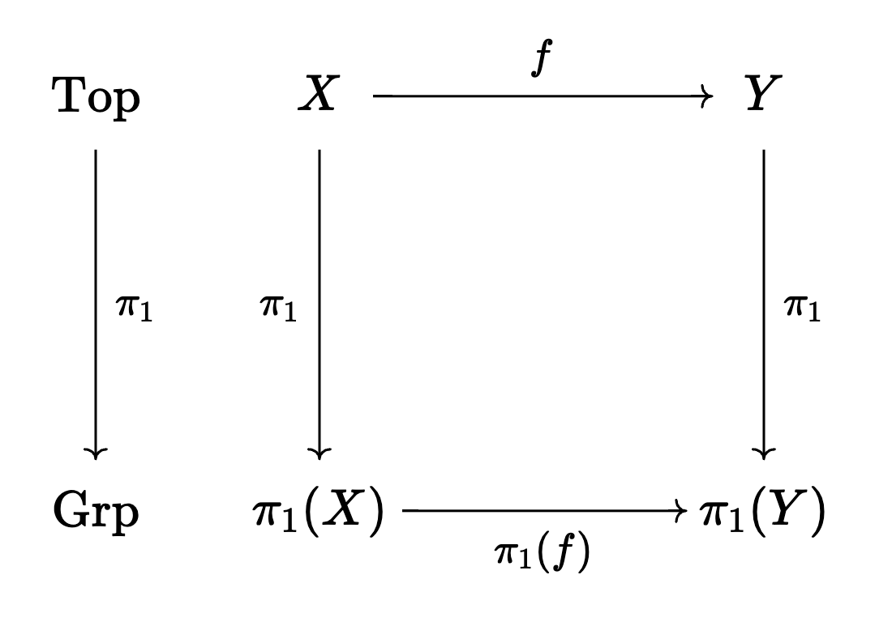

Category Theory in Haskell
Table of Contents
1. Introduction
Category Theory is the mathematical study of other mathematical theories. I first really appreciated it while studying topology. Topology is hard. Group Theory is easier. A lot of topology is about simplifying topology problems by reducing them to group theory problems.
1.1. Motivating Example
Suppose you have a continuous function \(f : X \to Y\) where \(X\) and \(Y\) are topological spaces. You want to know if \(X\) is homeomorphic to \(Y\) (topology-speak for "the same").
However, proving a homeomorphism can be really hard, since the spaces \(X\) and \(Y\) could have a uncountable (transfinite) number of points. The shape might be really weird. So topologists developed a way to compute a group called the fundamental group of a space. The fundamental group \(\pi_1(X)\) has elements which are loops in the space \(X\), the group operation is just following one loop and then following the other loop.
There's a very important theorem we proved about the fundamental group. Before we state it, let's look at this diagram:

\(\text{Top}\) is the category of topological spaces. \(\text{Grp}\) is the category of groups.
\(f\) is a continuous function between two spaces, and \(\pi_1(f)\) is a homomorphism between two groups.
To bring this all home, if the fundamental groups of \(X\) and \(Y\) are not isomorphic, then we know that the spaces are not homeomorphic. This is the way in which some topology problems can be reduced to abstract algebra.
1.2. Definition of a category
This \(\pi_1\) thing is an example of a functor. In order to understand functors, one must first understand categories.
A category \(\mathcal{C}\) is defined by:
- The collection \(\text{Ob}(\mathcal{C})\) of objects
- For each pair \(X,Y \in \text{Ob}(\mathcal{C})\), a set \(\text{Hom}(X,Y)\) of morphisms
- For each object \(X \in \text{Ob}(\mathcal{C})\), there's an identity functor \(\text{id}_X : X \to X\). (Note that \(\text{id}_X \in \text{Hom}(X,X)\))
- Morphisms compose: given \(f : X \to Y\) and \(g : Y \to Z\), there's a \(gf : X \to Z\)
- Morphism composition is associative: given \(f : X \to Y\), \(g : Y \to Z\), and \(h : Z \to W\), \[h(gf) = (hg)f\] \[hgf : X \to W\] is well-defined
1.3. Example of a category: \(\text{Hask}\)
The set \(\text{Ob(Hask)}\) of Haskell types is countable and well-defined.
For each pair of Haskell types a and b, the set \(\text{Hom}(a,b)\) is the
set of all Haskell functions a -> b
The id :: a -> a function is polymorphic, so it specializes to each Haskell type, so it satisfies 3. in the definition.
Haskell functions compose with the . :: (b -> c) -> (a -> b) -> a -> c operator.
It's associative. Prove me wrong.
1.4. Example of a functor on a category: Functor f
The Haskell Functor typeclass has this signature:
class Functor f where fmap :: (a -> b) -> f a -> f b
Does it implement a functor on \(\text{Hask}\)?
You can see from the diagram that f looks like an endofunctor, that is:
\[\texttt{f} : \text{Hask} \to \text{Hask}\]
1.5. Example of a functor on a category: Identity
newtype Identity a = Identity a deriving (Eq, Ord, Show)